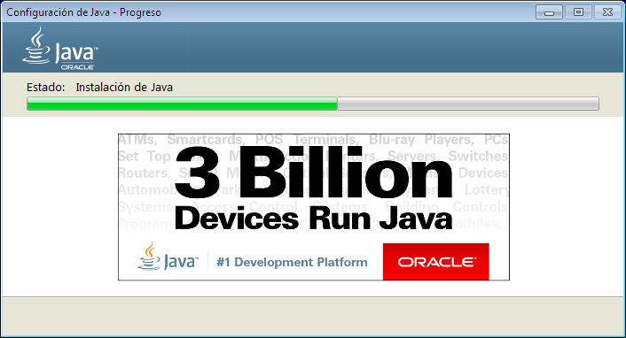
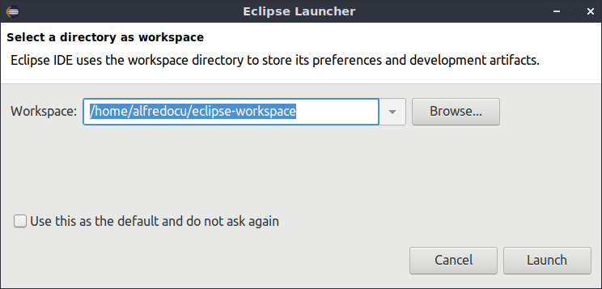

Punto de venta en Java
Descargar e Instalar Java en Windows
Abrimos nuestro navegador y el sitio oficial de Oracle Java, damos clic en “Aceptar e iniciar la descarga”.
Iniciará la descarga y cuando termine, el archivo se encuentra en nuestras descargas.
Damos doble clic.
Nos darán la bienvenida y damos clic en “Instalar”.
Empezara la descarga del instalador.
Empezara la instalación del programa.
Termina la instalación.
Para confirmar la instalación, abrimos nuestro CMD, y escribimos el comando
java -version
Nos muestra la versión de java instalada en nuestra computadora. Ahora cualquier programa basado en java podrá ser ejecutado.
Descargar e Instalar JDK en Windows
Para más información ¿Cómo puedo empezar a desarrollar programas Java con Java Development Kit (JDK)?
Abrimos nuestro navegador y el sitio oficial de Oracle Java, damos clic en “Descargar”.
Damos clic en aceptar condiciones, elegimos el JDK por medio de nuestro tipo de sistema operativo, en este caso todos son para arquitecturas de 64 bits, pero si buscas JDK para 32 bits lo encontraras aquí, la diferencia es que te pedirá crear una cuenta en Oracle para poder descargar el programa.
Una vez descargado el programa, abrimos nuestra carpeta de descargas y damos doble clic sobre el programa.
Inicia el programa y damos clic en “Next” (Siguiente).
Nos dará la bienvenida y una breve descripción.
Después nos mostrara todos los paquetes que instalara y damos clic en “Next”.
Empezara la descarga.
Nos indicara donde almacenara los archivos del JDK, es importante recordar esto y damos clic en “Siguiente”.
Empezara la instalación.

Al finalizar, damos clic en “Close” (Cerrar).
Nos vamos a nuestro “Disco C”, después a nuestros “Archivos de programa”, clic en la carpeta “Java” y nos mostrara nuestros archivos instalados del JDK. Listo ya tenemos nuestro Java y JDK instalados en nuestra computadora.
Descargar e Instalar Eclipse en Windows
Abrimos nuestro navegador y abrimos el sitio de Eclipse.
Elegimos la opción de Windows de 32 bits, si queremos una versión más resiente entonces da clic en Here y te llevara a los paquetes más actuales.
Una vez descargado, extraemos el archivo, damos doble clic y nos mostrara una carpeta llamada “eclipse”, cortamos esa carpeta.
Nos vamos a los “Archivos de programa” y pegamos la carpeta en este directorio.
Abrimos la carpeta y damos doble clic en el programa llamado eclipse
Se abrirá el programa, nos mostrará donde almacenará nuestros proyectos y damos clic en “OK”.
Nos dará la bienvenida, creamos un proyecto “Hola Mundo”, para verificar que todo funciona y listo.
Descargar e Instalar Java en Linux
No hay que hacer nada con Java, la versión instalada por defecto en el sistema es suficiente.
Descargar e Instalar JDK en Linux
También por defecto tenemos instalado JRE Y JDK, pero sino es así podemos ejecutar los siguientes comandos (antes de ser ejecutados el sistema pedirá ingresar su contraseña):
Para JRE: sudo apt-get install default-jre
Para JDK: sudo apt-get install default-jdk
Descargar e Instalar Eclipse en Linux
Para instalar Eclipse es con los siguientes comandos:
sudo apt-get install snapd
sudo snap install --classic eclipse
IMPORTANTE: Reiniciamos la computadora.
Después nos vamos a nuestro menú de inicio y buscamos nuestro programa instalado, lo abrimos y nos mostrara una vista de carga.
Nos mostrará donde almacenará nuestros proyectos y damos clic en “Launch”.

Nos da la bienvenida y nos muestra una gran variedad de recursos interesantes.
Creamos un proyecto “Hola Mundo”, para verificar que todo funciona y listo.
Punto de venta
Creamos nuestro programa, un punto de venta.
Damos clic en “File” y en “Export”.
Elegimos la opción “Runnable JAR file” y clic en “Next”.
En “Launch configuration” elegimos nuestro proyecto.
En “Export destination” indicamos donde guardarlo.
Damos clic en “Finish”.
Ya se creó el ejecutable.
Ejecutando en Windows.
Con el siguiente comando podremos ejecutar nuestro programa java -jar SalesPoint.jar
Ejecutando en Linux.